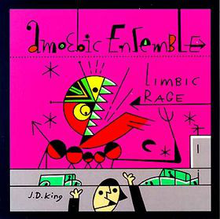
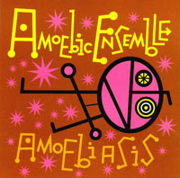

The Amoebic Ensemble, founded by accordionist Alec K. Redfearn, evolved out of an earlier group called Space Heater. Originally just 2 bass players and a percussionist, the band went on to experiment with multiple horn assaults, chamber-esque arrangements, and occasional punk-inspired chaos. I played trumpet for the Amoebics from 1994 through 1997.
 
Limbic Rage was reviewed on Mutant Sounds and is available in full on Youtube.